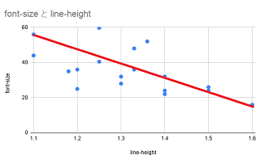

見出しh1「line-height」の値はfont-sizeに反比例する
前回、大手メディアの見出しh1フォントサイズについてチェックしましたが、海外サイトでは40～60px程度、日本では24～32pxで設定されているケースが多いようです。
☆前回の記事
→ 見出しh1のフォントサイズは何pxがよいのか？
そこで、今回はh1のline-heightについてもチェックしました。
■海外メディア
Bloomberg：1.25（font-size:59.7px）
ワシントンポスト：1.1（56px）
ハフポスト：1.36（52px）
BBC：1.1（44px）
CNN：1.25（40.5px）
ロイター：1.18（35px）
Avg.：1.20（47.86px）
h1のフォントサイズが40px～60pxで大きめに設定されている海外メディアの場合、line-heightについては小さめの「1.1～1.2」で設定されているケースが多いようです。
一方、フォントサイズが24px～32px程度の日本メディアの場合、「1.3～1.5」程度のケースが多いようでした。
■日本メディア
読売新聞：1.3（32px）
NHK：1.4（32px）
西日本新聞：1.4（32px）
産経新聞：1.3（28px）
毎日新聞：1.5（26px）
東京新聞：不明（24px）
朝日新聞：1.4（24px）
日経：1.5（24px）
ヤフーニュース：1.4（22px）
msnニュース：1.33（36px）
Avg.：1.39（28px）
公官庁のホームページでは1.2程度のケースもあります。
■官庁
首相官邸：1.33（48px）
厚生労働省：1.2（36px）
経産省：1.2（25px）
また、コンテンツ内については、16pxで「1.6」、もしくは「1.7」のケースが多かったです。
おおむね、「font-size」と「line-height」は反比例の関係にあると感じています。

当ブログについては、コンテンツ内もh1も同じ「1.6」で設定していたのですが、h1については1.4前後に変更した方がよいのかもしれません。
h1の見出しが長くなり、文字サイズが大きい状態で２行に表示される場合、line-heightを大きく設定してしまうと行間が空いてしまい、少し間の抜けた印象を受けてしまいます。そのため、ある程度は小さく設定した方が良いと思います。
まとめますと、フォントサイズが「40px～60px」のline-heightは「1.1～1.2」程度、「24px～32px」の場合は「1.3～1.5」程度、「16px」の場合は「1.6～1.7」程度がよいと思います。
また、font-familyについては、おおむねヒラギノ、メイリオのサンセリフ・ゴシック体でしたが、首相官邸と読売新聞についてはセリフの明朝体、文科省はゴシック体でも「ＭＳ Ｐゴシック」を採用しているようでした。
結論としましては、日本のサイトの場合、おおむね見出しh1のfont-sizeを28px、line-heightを1.4、font-familyをヒラギノ、メイリオ、sans-serifにて設定するのが一般的なのかもしれません。